Taman Impian Jaya Ancol merupakan sebuah objek wisata di bumi sari natar Jakarta Utara. Sebagai komunitas pembaharuan kehidupan masyarakat yang menjadi kebanggaan bangsa. Senantiasa menciptakan lingkungan sosial yang lebih baik melalui sajian hiburan berkualitas yang berunsur seni, budaya dan pengetahuan, dalam rangka mewujudkan komunitas 'Life Re-Creation' yang menjadi kebanggaan bangsa.
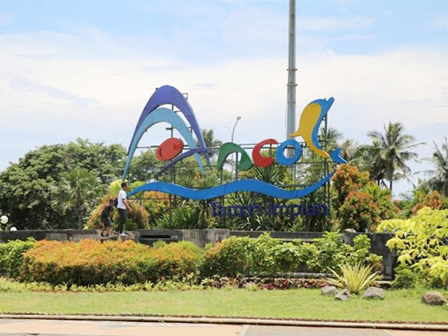Sejak awal berdirinya pada tahun 1966, Ancol Taman Impian atau biasa disebut Ancol sudah ditujukan sebagai sebuah kawasan wisata terpadu oleh Pemerintah Provinsi DKI Jakarta. Untuk mewujudkan tujuan tersebut, Pemda DKI menunjuk PT Pembangunan Jaya sebagai Badan Pelaksana Pembangunan (BPP) Proyek Ancol yang dilakukan secara bertahap sesuai dengan peningkatan perekonomian nasional serta daya beli masyarakat. Sejalan dengan perkembangan perusahaan yang semakin meningkat, pada tahun 1992, status Badan Pelaksana Pembangunan (BPP) Proyek Ancol diubah menjadi PT Pembangunan Jaya Ancol sesuai dengan akta perubahan No. 33 Tanggal 10 Juli 1992 sehingga terjadi perubahan kepemilikan dan prosentase kepemilikan saham, yakni 20% dimiliki oleh PT Pembangunan Jaya dan 80% dimiliki oleh Pemda DKI Jakarta. Pada 2 Juli 2004, Ancol melakukan “go public” dan mengganti statusnya menjadi PT Pembangunan Jaya Ancol Tbk., dengan kepemilikan saham 72% oleh Pemda DKI Jakarta, 18% oleh PT Pembangunan Jaya, dan 10% oleh masyarakat. Langkah “go public” ini dilakukan untuk lebih meningkatkan kinerja perusahaan, karena akan lebih terkontrol, terukur, efisien dan efektif dengan tingkat profesionalisme yang tinggi serta menciptakan sebuah Good & Clean Governance. Kinerja dan citra yang positif ini akan menjadikan perusahaan terus tumbuh dan berkembang secara sehat pada masa depan. PT Pembangunan Jaya Ancol Tbk. juga melakukan upaya repositioning dengan diluncurkannya logo baru Ancol pada 10 Juli 2005. Perubahan tersebut tidak semata mengganti logo perusahaan, tetapi juga untuk memacu semangat dan budaya perusahaan secara keseluruhan.
Dunia Fantasi atau disebut juga Dufan yang diresmikan pada 29 Agustus 1985 adalah tempat hiburan yang terletak di kompleks Taman Impian Jaya Ancol (Ancol taman impian), Jakarta Utara, Indonesia. Dunia Fantasi mempunyai maskot berupa kera bekantan yang diberi nama Dufan (singkatan dari Dunia Fantasi). Dipilih kera sebagai karakter adalah untuk mengingatkan bahwa Ancol dahulu adalah kawasan kera. Pemilihan kera bekantan adalah semata-mata untuk mengenalkan jenis satwa langka yang kini dilindungi. Pada awalnya Bentuk karikatural kera bekantan ini divisualisasikan oleh Matari Advertising yang ikut serta dalam program komunikasi awal Dunia Fantasi karena pada saat itu Agustinus Teddy Darmanto selaku ketua sekaligus penanggung jawab BenDufa (Bengkel Dunia Fantasi) sangat sibuk dalam tahap penyelesaian akhir, oleh karena itu pengvisualisasian diberikan pada Matari Advertising. namun setelah Dunia Fantasi dibuka untuk umum visualisasi karakter Dufan diambil alih kembali oleh team BenDufa dan tercipta lah logo dan maskot Dunia Fantasi si Dufan.
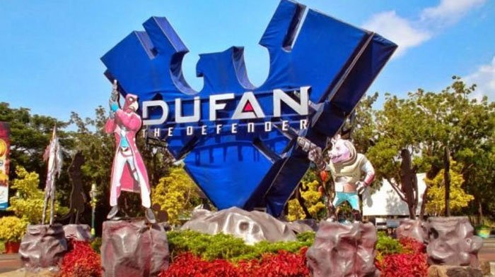 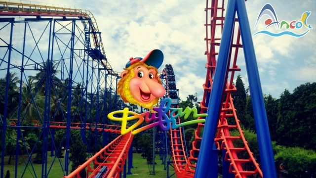 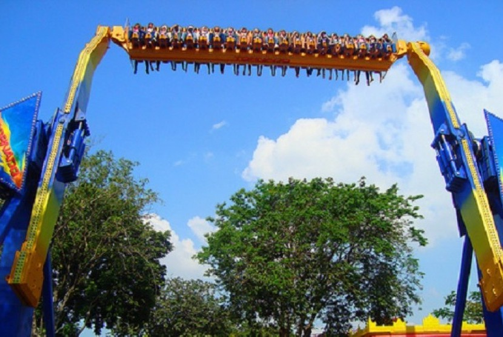Ocean Dream Samudra adalah salah satu wisata air yang sangat menarik serta digemari oleh semua kalangan. Tempat ini memang cocok dijadikan sebagai wisata keluarga. Lokasinya yang strategis dan dekat laut menjadikan daya tarik tersendiri bagi para wisatawan. Taman wisata ini mengusung tema konservasi alam, dan ada yang sangat spesial dari tempat tersebut adalah lumba-lumba. Ocean dream samudra Ancol punya tempat konservasi lumba-lumba yang punya fasilitas lengka mulai dari penampungan, tempat penangkaran, tempat pelatihan, tempat penangkaran, dan tempat penelitian. Selain itu, ada juga tempat pertunjukan lumba-lumba yang sering diadakan di tempat wisata Jakarta ini. Sebagai wahana wisata Ancol yang menawarkan wisata air keluarga, maka tentunya wisata di Jakarta tersebut juga dilengkapi dengan berbagai fasilitas dan akomodasi yang lengkap. Tempat ini juga punya koleksi wahana keluarga yang seru. Selain itu, tempat ini juga dikenal dengan kegiatan air yang sangat seru. Ada berbagai fasilitas wisata air yang dapat digunakan untuk para pengunjung. Di tempat ini, And juga bisa melihat berbagai pertunjukan, seperti pertunjukan ketrampilan lumba-lumba, singa laut, dan sebagainya. Berlibur ke tempat ini bersma keluarga bisa menjadi pilihan yang sangat tepat bagi Anda. Di lokasi wisata ini, anak-anak bisa terhibur dengan berbaai pertunjukan yang ada. Keluarga juga bisa melihat pertunjukan hewan laut. Semuanya bisa menikmati kecerdasan dan kelincahan yang dilakukan hewan yang telah dilatih secara profesional tersebut.
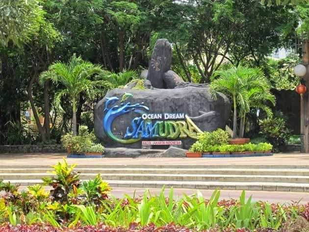Di tempat wisata ini, Anda bisa menikmati semua hiburan menarik dengan leluasa. Beberapa wahana yang dapat Anda nikmati di sini yakni underwater theater, taman surga burung, cinema 4D, scorpion pirates, dan aneka pertunjukan satwa. Di Underwater theater, Anda bisa melihat pertunjukan bawah air yang ada di sebuah akuarium raksasa bersama dengan hewan air. Sedangkan di taman surga burung, Anda bisa menyaksikan banyak koleksi burung khas Indonesia. Di Cinema 4D, Anda bisa menyaksikan film dengan dimensi yang sangat seru. Di Scorpion Pirates, Anda bisa menyaksikan pertunjukan drama dengan aksi yang seru dan menantang dan Anda juga bisa melihat berbagai satwa serta binatang langka.
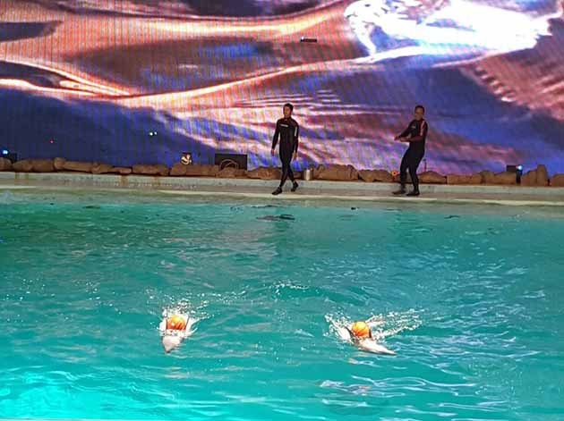 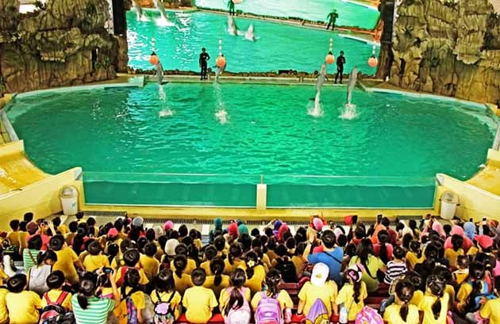Jika Anda ingin ke tempat wisata yang satu, tentunya Anda harus tau lokasinya terlebih dahulu. Wisata ini berada di kawasan Ancol, tepatnya di Jalan Lodan Timur No.7, RW.10, Ancol, Pademangan, Kota Jakarta Utara. Apabila kesulitan menemukan lokasinya, Anda bisa melihatnya di Google Maps. Anda bisa menggunakan transportasi apa saja untuk menuju tempat ini, baik kendaraan pribadi maupun kendaraan umum. Ingin merasakan serunya ocean dream samudera Ancol ini? Datang saja langsung, Anda bisa merasakan berbagai wahana wisata yang seru. Akan lebih asyik jika bersama keluarga atau teman-teman.
Berbicara mengenai Ancol, apa yang terlintas di benak Anda? Ya benar, wisata air. Kawasan di Jakarta Utara tersebut memang dikenal sebagai tempat wisata yang menyuguhkan aneka atraksi air. Salah satu tempat yang cocok untuk bermain air bersama seluruh anggota keluarga adalah Atlantis Water Adventure. Atlatis Water Adventure merupakan theme park terbesar kedua setelah Dunia Fantasi yang ada di kawasan Ancol. Water park tersebut berdiri di atas lahan seluas lima hektar. Mulanya taman permainan air itu bernama Taman Rekreasi Air Gelanggang Renang Ancol. Setelah direvitaslisai, namanya berubah sesuai tema yang diusung yakni peradaban Yunani yang hilang atau Atlantis.
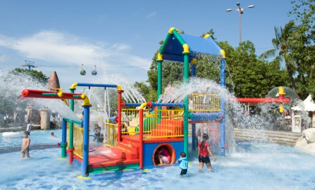Atlantis Water Adventure memiliki delapan kolam utama. Seluruh kolam dinamai sesuai tokoh-tokoh yang kerap muncul dalam legenda Yunani yaitu Poseidon, Antila, Plaza Atlas, dan Aquarius. Ada pula kolam yang disebut Octopus, Atlantean, dan Kiddy Pool. Tempat wisata itu juga dilengkapi dengan kolam arus. Di wahana tersebut pengunjung bisa bersantai sambil menikmati seluruh pemandangan wahana water park tanpa harus lelah menjelajah. Anda cukup duduk di atas perahu karet yang bergerak mengkuti di kolam yang mengelilingi taman permainan air. Bagi yang tidak pandai berenang, silakan datang ke kolam apung. Kolam tersebut memiliki kadar garam yang cukup tingi sehingga Anda tidak akan tenggelam meski tanpa ban pelampung. Suasana gelombang pantai juga bisa dirasakan dengan mengunjungi kolam ombak. Ombak buatan dapat dirasakan selama 15 menit setiap satu jam sekali. Bagi yang gemar berkompetisi, silakan berlomba di kolam tanding. Wahana itu dilengkapi garis lintasan serta pijakan lompat seperti yang biasa ditemui di lomba renang.
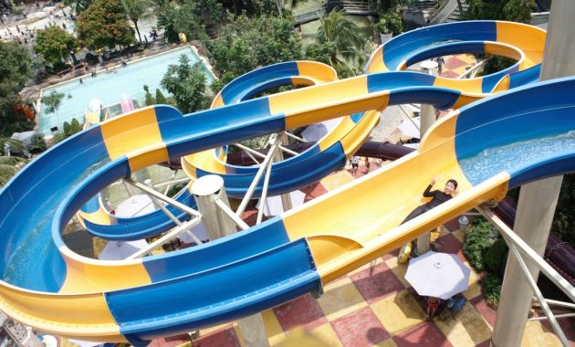Atlantis Water Adventure memiliki delapan kolam utama. Seluruh kolam dinamai sesuai tokoh-tokoh yang kerap muncul dalam legenda Yunani yaitu Poseidon, Antila, Plaza Atlas, dan Aquarius. Ada pula kolam yang disebut Octopus, Atlantean, dan Kiddy Pool. Tempat wisata itu juga dilengkapi dengan kolam arus. Di wahana tersebut pengunjung bisa bersantai sambil menikmati seluruh pemandangan wahana water park tanpa harus lelah menjelajah. Anda cukup duduk di atas perahu karet yang bergerak mengkuti di kolam yang mengelilingi taman permainan air. Bagi yang tidak pandai berenang, silakan datang ke kolam apung. Kolam tersebut memiliki kadar garam yang cukup tingi sehingga Anda tidak akan tenggelam meski tanpa ban pelampung. Suasana gelombang pantai juga bisa dirasakan dengan mengunjungi kolam ombak. Ombak buatan dapat dirasakan selama 15 menit setiap satu jam sekali. Bagi yang gemar berkompetisi, silakan berlomba di kolam tanding. Wahana itu dilengkapi garis lintasan serta pijakan lompat seperti yang biasa ditemui di lomba renang.

Sebagai water park ternama, Atlantis Water adventure juga dilengkapi dengan berbagai fasilitas penunjang. Kamar bilas dan ruang ganti yang nyaman mudah ditemukan di salah satu sudut water park. Untuk menjamin keamanan barang bawaaan pengunjung, pengelola menyediakan loker khusus. Ada pula tempat persewaan pelampung serta toko pakaian dan perelengkapan renang. Wahana rekreasi Atlantis Water Adventure bisa dikunjungi setiap hari mulai pukul 07.00 sampai jam 20.00. Tiket masuknya adalah Rp 90.000 (week day) dan Rp 120.000 (akhir pekan atau libur umum). Untuk mengunjungi Atlantis Water Adventure, Anda bisa menggunakan kereta komuter dan turun di Stasiun Ancol. Selanjutnya tinggal berjalan kaki kurang dari 15 atau naik taksi untuk sampai water park yang dituju. Bila datang dari luar kota, Anda bisa bermalam di Aston Marina Hotel, Putri Duyung Ancol Hotel, atau Mercure Convention Centre Ancol Hotel usai berlibur di Atlantis Water Adventure.
Sea World Ancol adalah salah satu kawasan wisata yang tak pernah sepi pengunjung. Di tempat wisata ini Anda akan bisa mengamati dan mempelajari berbagai hewan dan ikan laut. Wisata ini akan memberikan berbagai informasi dan edukasi tentang semua yang ada di laut. Saat ini juga terdapat game Seaworld Tycoon yang bisa memudahkan Anda dalam merancang atau mendesain Sea world versi kesukaan pengunjung. Hingga saat ini wisata tersebut menjadi pilihan untuk liburan bersama keluarga saat libur panjang. Wisata Jakarta ini punya berbagai hiburan dan sisi edukasi yang dapat memperkenalkan kehidupan dunia laut. Di tempat wisata ini Anda bisa mengenak kehidupan serta ekosistem biota laut yang ada di samudera. Wisata laut ini punya 7.300 jenis biota air tawaryang terdiri dari 48 jenis ikan dan 1 jenis reptile. Selain itu, ada biota hewan laut juga di tempat ini. Ada sekitar 11.500 biota laut yang ada di wisata laut ini. Ada 138 jenis ikan serta 3 jenis reptile. Biota laut tersebut ditampilkan di tempat wisata Jakarta yang satu ini. Ada sekitar 28 tampilan yang dibagi menjadi 9 akuarium air tawar serta adanya 19 akuarium dan 4 kolam terbuka yang dapat dikunjungi para wisatawan. Akuarium dan Wahana Sea World Ancol juga diberikan tema-tema khusus. Hal ini agar bisa memberikan nuansa khusus serta pesan tersendiri kepada para pengunjung yang datang. Kawasan wisata ini memang bisa menambah pengetahuan biota laut. Apalagi di tempat tersebut juga sudah ada label informasi yang menjelaskan keunikan dan biologis dari hewan laut. Tempat wisata ini punya konsep yang sama seperti halnya yang ada di Bangkok, Orlando, Hongkong, Malaysia, dan Singapore. Jenis ikan yang ada di kawasan wisata tersebut juga banyak diambil dari kawasan laut Indonesia, seperti samudera Hindia, laut jawa, samudera pasifik hingga samudera atlantik. Selain itu, di tempat ini juga sudah disediakan berbagai acara dan fasilitas penunjang yang diberikan kepada para pengunjung. Acara-acara tersebut misalnya feeding show biasa dilakukan dalam akuarium utama serta beberapa acara lain yang dapat menarik minat wisatawan lainnya.
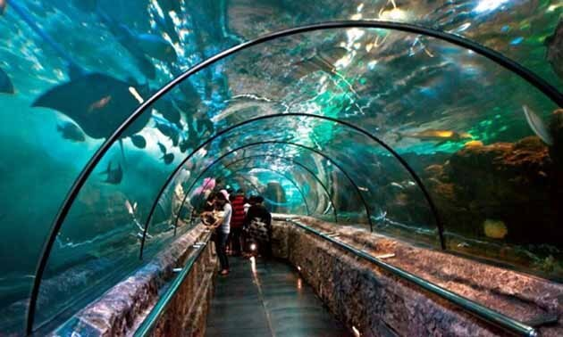Jika Anda ingin pergi ke tempat wisata ini, maka Anda harus tau lokasinya terlebih dahulu. Lokasi wisata dunia laut ini ada di Taman Impian Jaya Ancol, Jalan Lodan Timur No. 7, RW.10, Ancol, Pademangan, Kota Jakarta Utara. Apabila masih kesulitan menemukan lokasinya, Anda bisa melihat lokasi dengan bantuan aplikasi google maps yang ada di ponsel. Untuk menuju tempat ini, Anda bisa menggunakan transportasi apa saja, baik kendaraan pribadi maupun kendaraan umum. Mau liburan ke Sea World Ancol yang menyenangkan ini? tentu saja Anda bisa datang langsung ke tempatnya. Di sini Anda bisa belajar banyak hal tentang kehidupan biota laut.
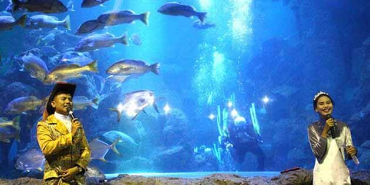Bagi anda yang menyukai konsep berlibur di alam terbuka yang hijau, di Jakarta tersedia wahana Ocean Ecopark yang akan menjembatani keinginan anda dan keluarga. Harga tiket masuk menuju tempat wisata terpopuler di jakarta pada saat lebaran kemaren ini, tergantung jenis permainan yang digunakan. Tarif terbaru ini dikenakan bagi setiap pengunjung Ancol yang ingin bermain di Ocean Ecopark baik berdasarkan pilihan maupun ingin mengambil paket. Wisata seru yang merupakan ajang rekreasi keluarga ini sungguh memikat banyak orang apalagi lokasinya sangat luas menempati area bekas lapangan golf Ancol. Sebelum kami memberitahukan harga tiket masuk terbaru untuk bermain di Ocean Ecopark ini, ada baiknya kami beritahukan lokasinya kepada pembaca. Letaknya tepat di jantung Taman Impian jaya Ancol di Jakarta Utara. Ada 4 tema yang diusung obyek wisata ini yaitu: Eco Energy, Eco Care, Eco Nature dan Eco Art. Setelah anda membayar tarif di gerbang utama sebesar Rp. 25.000 per orang (di luar tarif parkir mobil/motor), maka lokasi taman bermain ini tepat di depan anda, di sebelah kiri pasar seni. Wahana Ecopark ini termasuk mudah ditemukan karena areanya salah satu yang terluas di kawasan Ancol. Menempati areal sebesar 34 hektar, rasanya hampir semua pengunjung pasti akan melewati tempat rekreasi terbaru ini.
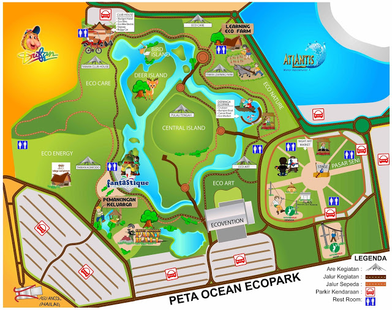Jika anda ingin berbelanja oleh-oleh (souvenir), di sini tersedia ecomarket yang tentu saja disukai oleh kaum wanita. Bahkan banyak juga ibu-ibu yang menunggu anaknya bermain dan menghabiskan waktu di eco-market ini. jadi baik ayah, anak dan ibu, semuanya bakal merasakan suka cita bermain di Eco-park Ocean di Ancol ini. Sesuai tabel di atas, maka daftar permainan di taman rekreasi keluarga di jakarta Utara ini adalah sebagai berikut: Learning Farm. Yaitu wahana edukasi bagaimana caranya menanam sayuran secara organik. Ecobike. Bersepeda berkeliling di lintasan yang telah ditentukan. Jangan anggap remeh karena area 34 hektar cukup membuat anda berkeringan. Memberi makan kelinci dan ikan. Mengunjungi rumah Lebah dan madu yang dihasilkannya. Memanen telur bebek dan membuat telur asin. Kebun tempat mempelajari cara merawat hewan ternak, diantaranya memberi makan kambing. Seolah keluarga anda memiliki kebun binatang tersendiri dengan hewan ternak di dalamnya. Berkeliling danau buatan dengan kano. Fantastique. Area multimedia yang mengagumkan. Pertunjukkan lampu-lampu mempesona dilakukan di malam hari di sini. Bermain flying fox di Ocean Ecopark yang dikenal cukup ekstrim di jakarta. Bermain Paintball untuk kelompok umur minimal 14 tahun. Mobil-mobilan baik berbentuk bom-bom car (biasanya remaja menyukainya) atau mobil listrik untuk anak-anak. Outbound. Anda bisa berjalan di atas tali yang terpasang di pohon (top-tree walking) dan permainan outbound yang seru lainnya. Pada kesempatan ini, kami juga ingin memberitahukan bahwa ada paket khusus “learning farm” yang diterbitkan oleh pengelola Ocean Ecopark ini bagi pengunjung. Harga tiket terbaru dengan paket khusus untuk masuk obyek wisata ini tersedia dengan tarif yang sudah termasuk karcis masuk di gerbang utama Ancol, dengan syarat tertentu. Silakan perhatikan pada gambar di bawah ini.
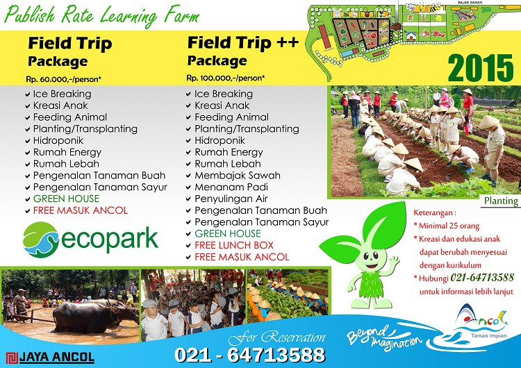Sebagai salah satu tujuan wisata di Jakarta, Ancol selalu menghadirkan tempat wisata seru bareng keluarga. Boboers pasti udah biasa banget dong kalau cuma masuk ke Seaworld, Dufan, atau Atlantis, nah sekarang Ancol menambah satu lagi tempat wisata seru yang juga menyenangkan bagi bocah-bocah, Fauna Land! Fauna Land merupakan sebuah kebun binatang yang berada di kawasan Ancol. Harga tiketnya IDR 50.000 buka setiap hari.
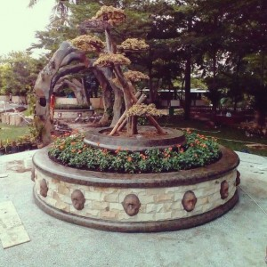 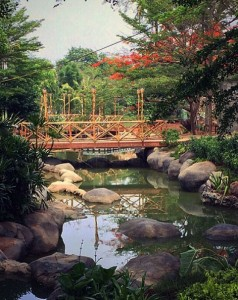Di dalam Fauna Land terdapat berbagai jenis burung-burung, ada kura-kura, kuda, udah :p Hewannya memang cuma sedikit tapi tempatnya ditata apik banget loh. Fauna Land mengusung konsep Papua yang merupakan perpaduan antara benua Asia dan Australia sehingga menciptakan keindahan flora, fauna dan seni budaya daerah tersebut. Ada juga rumah-rumah adat-adat Papua, lengkap dengan tothem-tothem dan ukirannya yang dibuat langsung oleh artis asal Papua.
Putri Duyung Ancol terletak di sepanjang pantai Teluk Kota Jakarta di Jakarta Utara. Properti ini memiliki beragam fitur yang unik, termasuk akomodasi pondok di tepi perairan dan sebuah kolam renang outdoor yang berbentuk seperti perahu.
Resor terletak di dalam Taman Impian Jaya Ancol, sebuah kompleks taman hiburan yang meliputi Dunia Fantasi, Sea World, dan Atlantis Water Adventure. Properti ini berjarak 20 km dari Bandara Internasional Soekarno Hatta.
Dengan AC dan perabotan kayu, kamar-kamar di Putri Duyung Ancol juga dilengkapi dengan TV satelit, kulkas, dan fasilitas membuat teh/kopi. Kamar mandi pribadinya menyediakan shower air panas.
Anda bisa bermain tenis atau berlari di sepanjang trek jogging sambil menikmati angin laut. Penyewaan sepeda gratis membuat kegiatan menjelajahi lingkungan sekitarnya menjadi nyaman. Resor ini juga menawarkan pusat bisnis dan layanan penyewaan mobil.
Nyiur Café menyajikan hidangan lokal dan internasional. Pemandangan laut yang indah menemani makanan ringan di Cabana Beach Bar. Fasilitas barbekyu pantai juga tersedia.
Jakarta Utara adalah pilihan tepat buat wisatawan yang suka hiburan, pasar, dan orang-orang yang ramah.
Akomodasi ini juga berada di salah satu kawasan paling favorit di Jakarta! Tamu lebih senang di sini dibandingkan dengan di akomodasi lain di area yang sama.
Pasangan paling suka lokasinya — mereka memberi nilai 8,4 untuk perjalanan dua orang.